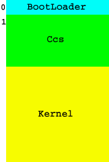

Per caricare il kernel dobbiamo prima averlo scritto su un qualche dispositivo: per comodità useremo il floppy che è un dispositivo di facile programmazione, enorme diffusione, poco costo.
La prima cosa è decidere il formato di come saranno organizzate le informazioni, visto che non abbiamo ancora un file system. Un'organizzazione semplice può essere:

Come ci impone il Bios nel primo settore mettiamo il bootloader e di seguito mettiamo il ccs+kernel (la fine dipende dalla grandezza del kernel).
In seguito vedremo che dobbiamo modificare leggermente l'impostazione del floppy.
Per fare una scrittura raw su linux possiamo usare dd.
La sintassi di dd è:
dd if=immagine_del_floppy of=/dev/fd0
Ora che abbiamo il bootloader e il kernel su floppy, riavviamo il pc, impostando dal bios l'avvio da floppy, e il bootloader caricherà il kernel in memoria.
Per leggere da floppy ci viene in aiuto l'interrupt del bios numero 13h e precisamente il servizio 02h.
Dunque per farlo funzionare dobbiamo impostare:
INPUT:
ah = 02h
al = numero di settori da leggere (non deve essere zero)
ch = 8 bit bassi del numero del cilindro
cl = numero del settore da 1 a 63 (bit 0-5)
2 bit alti del numero del ciclindro (bit 6-7)
dh = numero della testina
dl = numero del driver
es:bx = buffer dei dati
OUTPUT:
CF settato se c'è stato un errore
non settato se tutto è andato bene
per ulteriori informazioni cercare la lista di ralph brown su internet.
Iniziamo a scrivere un pò di codice assembly.
mov si,KRNL_SIZE ;lo usiamo come una specie di contatore
mov bx,ax ;metto ax a zero
mov ax,0x1000 ;metto in ax l'offset in cui caricare il kernel per poi spostarlo in es
mov es,ax ;quindi setto es con il mio offset
mov cx,2 ;metto cx a 2 per indicare di partire dal secondo settore
xor dx,dx
.readAgain:
mov ah,0x02 ;indico che voglio leggere
mov al, 01 ;leggo solo un settore
int 0x13 ;leggo dal floppy
jc short .error ;se c'è un errore prova la lettura 3 volte (altrimenti il floppy è difettoso)
mov ax,es ;
add ax,32 ; incrementento es di 32 byte
mov es,ax ;
dec si ;decremento il contatore
jz short .readOk ;se si è diverso da 0 leggo il settore successivo
inc cx ;incremento il contatore dei settori
cmp cl,18 ;controllo se è finita la traccia
jbe short .readAgain ;se non è ancora finita leggo il settore successivo
mov cl,1 ;altrimenti metto la traccia ad 1
inc dh ;e metto la seconda faccia
cmp dh,2
jne short .readAgain ;se non sono alla seconda faccia leggo ancora
mov dh,0 ;altrimenti torno alla prima faccia
inc ch ;e incremento ancora la testina
jmp short .readAgain ;e vado a leggere
.error: ;se ci è stato un errore in lettura
xor ax,ax ;metto ax a zero
int 0x16 ;aspetto la pressione di un tasto
int 0x19 ;riavvio il caricamente del bootloader
.readOk:
; spengo il motore del floppy
mov edx,0x3f2 ;metto edx=0x3f2 che è il comando per spegnere il floppy
mov al,0x0c ;metto al=0xC che è la porta del floppy
out dx,al ;eseguo il comando
La modalità reale per compatibilita con il buon vecchio 8086 non permette di accedere ad oltre 1 MB di ram, dobbiamo quindi attivare la A20 che è una linea del processore che risolve il problema.
Le righe di codice per fare ciò sono queste:
cli ;disabililito gli interrupt
.wait1: ;aspetto che la tastiera sia libera
in al, 0x64
test al, 2
jnz .wait1
mov al, 0xD1
out 0x64, al
.wait2: ;aspetto che la tastiera sia disposta ad accettare comandi
in al, 0x64
and ax, byte 2
jnz .wait2
mov al, 0xDF
out 0x60, al
Una volta caricato il kernel ed attivato l'A20 bisogna entrare in modalità protetta. I processori dal 286 in poi supportano una modalità in più rispetto ai processori precedenti: questa è la modalità protetta. Essa permette di trarre vantaggio delle caratteristiche a 32bit dal 386 in poi e delle caratteristiche a 24 bit del 286. Come abbiamo visto anche il 286 supporta la modalità protetta ma noi lavoreremo col 386 e superiori, sebbene le modifiche da fare siano minime.
Per entrare in modalità protetta prima bisogna caricare la gdt. La gdt (global description table) si occupa di gestire tutte le caratteristiche del pc, in una prossima lezione la esamineremo molto più attentamente.
Una volta caricata la gdt basta attivare un bit nel registro cr0 e saltare ad un pezzo di codice a 32 bit, e il tutto si è compiuto.
lgdt [gdtinfo] ;carico la gdt
mov eax,cr0 ; metto in eat cr0
or al,1 ;imposto il bit per la modalità protetta
mov cr0,eax ;siiiiiiiii, vado in modalità protetta
jmp dword (flat_code-gdt_table):pmode1; tutto è pronto, e quindi configuro i selettori dei segmenti
pmode1:
[BITS 32]
Una volta arrivati in un pezzo di codice a 32 bit la prima cosa da fare è impostare i registri segmento e lo stack
mov ax, flat_data-gdt_table ; metto il selettore in ax
mov ds, ax ; uso lo stesso selettore per i dati
mov es, ax ; l'extra segment
mov fs, ax ; fs
mov gs, ax ; gs
mov ss,ax ; e lo stack
mov esp, 0x9FFFC ;imposto la base dello stack
push dword 2 ;metto il valore 2 nello stack
popfd ;imposto a 2 gli eflag
A questo punto finalmente si può saltare al codice del kernel che noi abbiamo caricato all'indirizzo 0x1000.
Quindi basta fare:
mov eax, 0x10000
call eax
Forse risulta poco chiara la questione della gdt, ma tra qualche lezione verrà chiarita.
I primi due punti della nostra scaletta sono stati affrontati, ora occupiamoci del ccs.
In questa lezione l'unica cosa che farà il kernel sarà quella di scrivere a video:
"Ciao sono il tuo sistema operativo".
Per fare questo dobbiamo andare a scrivere direttamente nella memoria della scheda video.
Gli indirizzi della scheda video sono mappati in memoria a partire da 0xb8000, ogni carattere a video è rappresentata da 2 byte quindi tutta la memoria video sarà grande 0xb8000+(80*25*2). 80 x 25 sono rispettivamente le colonne e le righe del nostro schermo.
I 2 byte rappresentano: il primo il codice ascii del carattere, il secondo il colore del carattere e sui attributi.
Il secondo byte è organizzato così:
bit funzione
0,1,2,3 colore del carattere
4,5,6 colore dello sfondo del carattere
7 lampeggiamento
Per ottenere un carattere bianco con sfondo nero basta impostare il tutto a 0x7.
Quindi scriviamo una semplice funzione che ci stampa a video un carattere.
char *videomem = (char *) 0xb8000;
void putc(char carattere){
videomem++ = carattere; /*imposto il carattere*/
videomem++ = 0x7; /*imposto gli attributi del carattere*/
}
Ovviamente bisogna gestire gli accapo, lo scroll dello schermo, etc ma è una cosa che faremo nella prossima lezione.
Bene! A questo punto abbiamo tutto.
Bisogna fare alcune considerazioni finali.
L'esecuzione del ccs non inizierà mai dal main ma dalla funzione _start.
Quindi avremo una cosa del genere:
void _start(){
main();
while(1);
}
int main(){
puts("Ciao sono il tuo sistema operativo");
return 0;
}
Per questa lezione è tutto. Vi lascio allo studio dei sorgenti.
I file sono:
- main.c che contiene il ccs
- bootloader.asm che contiene il bootloader
- makefile che contiene il makefile.
Il makefile ci permette:
make compila il tutto
make install compila e installa su floppy
make clean cancella gli oggetti.